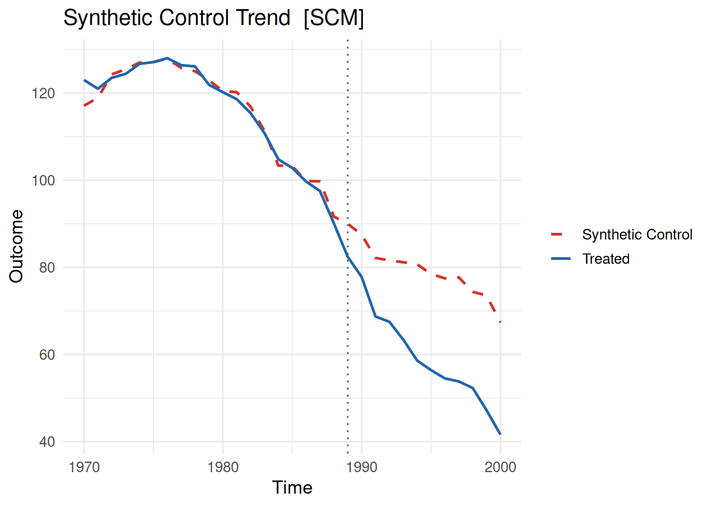
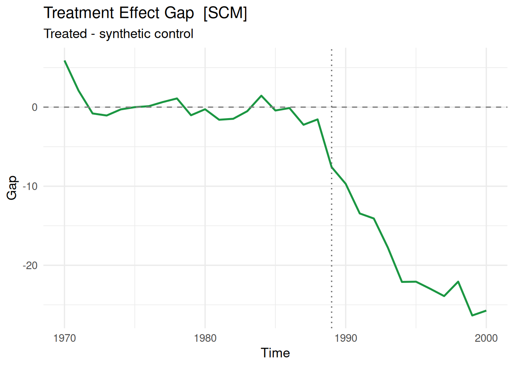
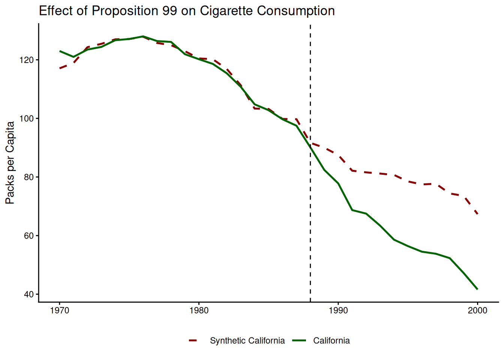
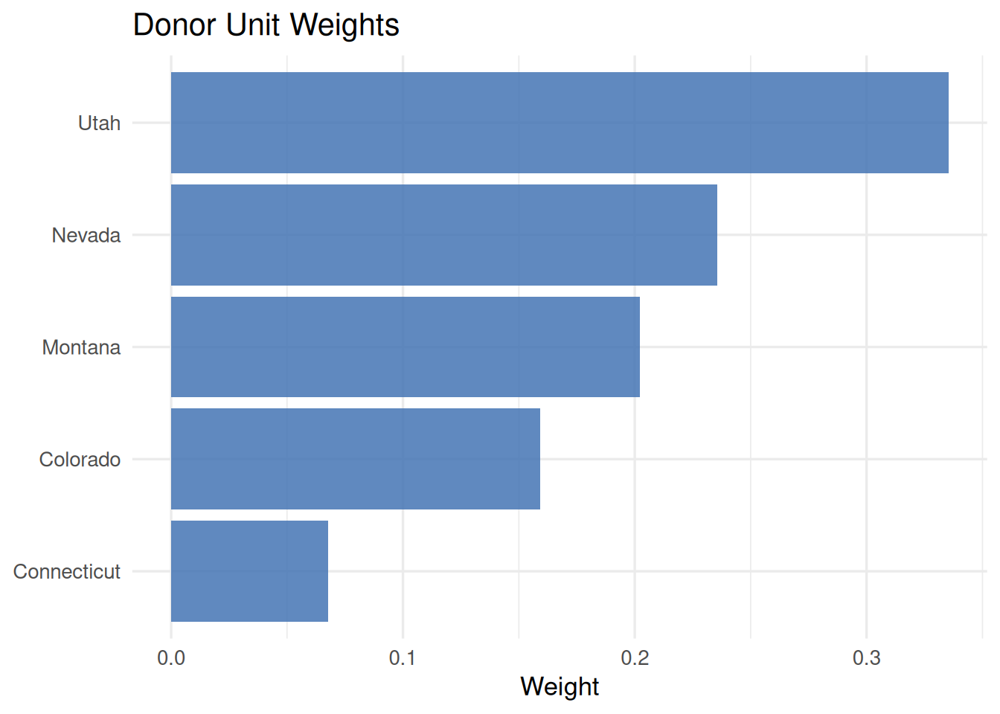
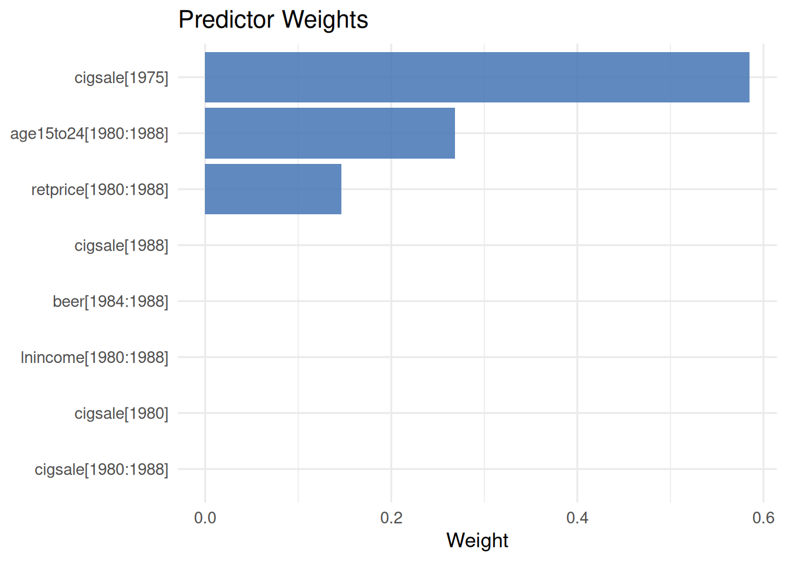
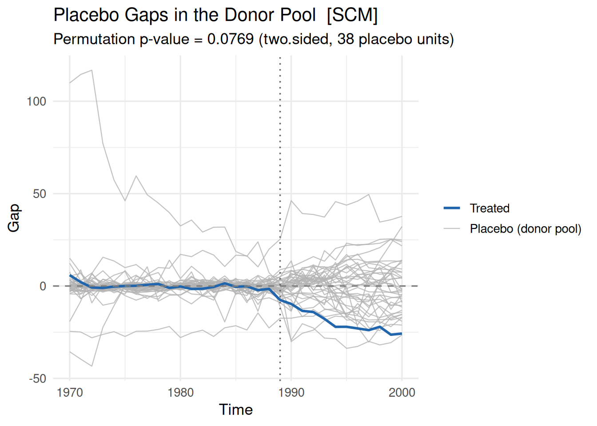
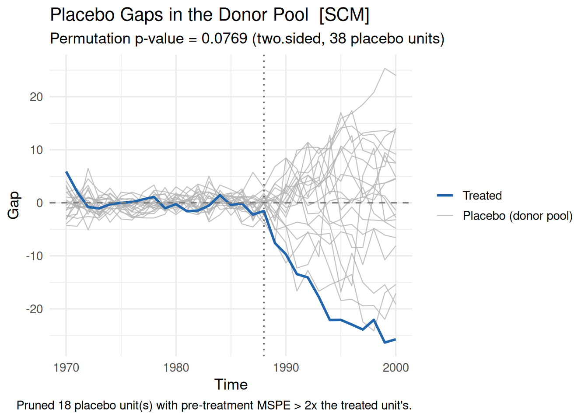

library(coresynth)
library(tidysynth)
library(tidyverse)


Introduction
The {coresynth} package is an R package I developed to support modern panel data estimators, including the Synthetic Control Method (SCM), Synthetic Difference-in-Differences (SDID), and Matrix Completion. In this post, we focus on the foundational Synthetic Control Method, walking step-by-step through data preparation, estimation, visualization, and placebo-based inference using coresynth.
What is {coresynth}?
coresynth is an open-source R package developed to implement the Synthetic Control Method and related estimators with high computational speed. It is available on CRAN and under active development on GitHub.
The core computational bottlenecks are implemented in C++ via RcppArmadillo. Consequently, coresynth runs significantly faster than traditional pure-R implementations. This speed advantage becomes particularly dramatic when analyzing datasets with large donor pools or running leave-one-out placebo tests across all units.
For benchmark comparison, in a typical empirical setup where the classic {Synth} or {tidysynth} package takes around 15–20 seconds (including placebo runs), coresynth finishes the exact same routine in just a fraction of a second to a few seconds—often achieving substantial speedups depending on the number of predictor variables.
You might naturally wonder whether this performance boost comes at the cost of optimization accuracy. Across extensive multi-faceted validations against existing reference implementations, coresynth solves the underlying constrained convex optimization problem with high fidelity, reliably identifying global optimal weights.1
Setup & Installation
You can install the released version of coresynth from CRAN, or grab the latest development version directly from GitHub:
# Install released version from CRAN
pak::pak("coresynth")
# Or install development version from GitHub
pak::pak("yo5uke/coresynth")Next, let’s load coresynth into your R session. For comparison purposes, we will also load tidysynth and utility packages from the {tidyverse}.
Data: California Proposition 99
To illustrate the workflow, we use the classic smoking dataset included in the tidysynth package. This dataset covers per-capita cigarette sales across 39 US states from 1970 to 2000, investigating the impact of California’s Proposition 99 tobacco control program passed in 1988 (Abadie et al. 2010).
data("smoking", package = "tidysynth")| state | year | cigsale | lnincome | beer | age15to24 | retprice |
|---|---|---|---|---|---|---|
| Rhode Island | 1970 | 123.9 | NA | NA | 0.1831579 | 39.3 |
| Tennessee | 1970 | 99.8 | NA | NA | 0.1780438 | 39.9 |
| Indiana | 1970 | 134.6 | NA | NA | 0.1765159 | 30.6 |
| Nevada | 1970 | 189.5 | NA | NA | 0.1615542 | 38.9 |
| Louisiana | 1970 | 115.9 | NA | NA | 0.1851852 | 34.3 |
| Oklahoma | 1970 | 108.4 | NA | NA | 0.1754592 | 38.4 |
Estimation with scm_fit()
In coresynth, all supported panel estimators are unified under a single primary function: scm_fit(). To run the Synthetic Control Method, specify method = "scm".
Constructing the Treatment Indicator
scm_fit() requires a binary treatment indicator that takes the value 1 for the treated unit in the post-treatment period, and 0 otherwise.
smoking <- smoking |>
mutate(
treated = if_else(state == "California" & year >= 1989, 1L, 0L)
)In this case, California passed Proposition 99 in late 1988, so treated equals 1 for California starting in 1989.
Model Formula & Predictor Syntax
Following the two-way fixed effects syntax common in packages like {fixest}, the formula is specified as outcome ~ treated | unit + time.
Pre-treatment predictor variables are specified using the predictors argument as a list of pred() specifications. The pred() function takes the predictor column name(s) and the corresponding pre-treatment time window over which to aggregate them.
To benchmark the runtime, let’s time the complete estimation including all-donor placebo calculations using the {tictoc} package:
Here we run scm_fit() and immediately calculate the full placebo distribution via mspe_ratio_pval():
core_fit <- scm_fit(
cigsale ~ treated | state + year,
data = smoking,
method = "scm",
predictors = list(
pred(c("lnincome", "retprice", "age15to24"), 1980:1988),
pred("cigsale", 1980:1988),
pred("beer", 1984:1988),
pred("cigsale", 1975),
pred("cigsale", 1980),
pred("cigsale", 1988)
)
)
core_placebo <- mspe_ratio_pval(core_fit) # Calculate placebos as well2.37 sec elapsedFor comparison, here is the equivalent specification implemented in tidysynth:
smoking_out <- smoking |>
synthetic_control(
outcome = cigsale,
unit = state,
time = year,
i_unit = "California",
i_time = 1988,
generate_placebos = TRUE
) |>
generate_predictor(
time_window = 1980:1988,
ln_income = mean(lnincome, na.rm = TRUE),
ret_price = mean(retprice, na.rm = TRUE),
youth = mean(age15to24, na.rm = TRUE)
) |>
generate_predictor(
time_window = 1980:1988,
ln_cigsale = mean(cigsale, na.rm = TRUE)
) |>
generate_predictor(
time_window = 1984:1988,
beer_sales = mean(beer, na.rm = TRUE)
) |>
generate_predictor(
time_window = 1975,
cigsale_1975 = cigsale
) |>
generate_predictor(
time_window = 1980,
cigsale_1980 = cigsale
) |>
generate_predictor(
time_window = 1988,
cigsale_1988 = cigsale
) |>
generate_weights(
optimization_window = 1970:1988,
margin_ipop = .02,
sigf_ipop = 7,
bound_ipop = 6
) |>
generate_control()16.906 sec elapsedIn this comparison, coresynth finishes in 2.37 seconds, whereas tidysynth takes 16.91 seconds—a 7.1× speedup.
When running extensive sensitivity analyses, tuning hyperparameters, or testing multiple candidate donor pools, waiting 20 seconds per run quickly adds up. This efficiency gain was a core motivation behind developing coresynth.
TipSpecifying Non-Annual Time Horizons in
pred()
The second argument of pred() takes a vector of time points. For annual data, integer sequences like 1980:1988 work naturally. For monthly or daily data, you can pass a sequence of Date objects using seq():
# Example for monthly panel data
seq(as.Date("2020-01-01"), as.Date("2020-12-01"), by = "month")Visualizing Trends and Gaps
coresynth objects come with a unified plot() method returning clean, publication-ready ggplot2 figures.
plot(core_fit, type = "trend")
The trajectory plot displays the actual outcome series for the treated unit alongside the estimated synthetic control counterpart. Because type = "trend" is the default, calling plot(core_fit) yields the same figure.
plot(core_fit, type = "gap")
The gap plot shows the difference between the treated unit and its synthetic control over time (\(Y_{1t} - \widehat{Y}_{1t}^{\text{synth}}\)), making post-treatment treatment effects visually striking.
Customizing Plots with ggplot2
Because coresynth plots are standard ggplot objects, you can customize labels, colors, and themes effortlessly with standard ggplot2 syntax:
plot(
core_fit,
colors = c(treated = "darkgreen", synthetic = "darkred"),
labels = c(treated = "California", synthetic = "Synthetic California"),
vline = list(linetype = "dashed", color = "black"),
vline_offset = -1
) +
labs(
title = "Effect of Proposition 99 on Cigarette Consumption",
x = NULL,
y = "Packs per Capita"
) +
theme_classic() +
theme(legend.position = "bottom")
Arguments like colors and labels modify aesthetic mappings directly, while vline and vline_offset provide flexible control over the intervention vertical marker.
Inspecting Weights and Predictor Balance
Understanding how the synthetic counterfactual was constructed is central to any SCM analysis. Calling summary() on a fitted object displays the donor unit weights (\(W\)) and the predictor balance table:
summary(core_fit)=== coresynth summary ===
Method : SCM
Periods : T_pre = 19 | T_post = 12
ATT estimate: -18.97965
Unit weights (non-zero donors):
Colorado Connecticut Montana Nevada Utah
0.1590 0.0677 0.2022 0.2357 0.3353
Predictor balance:
predictor treated synthetic
lnincome[1980:1988] 10.0766 9.8583
retprice[1980:1988] 89.4222 89.4222
age15to24[1980:1988] 0.1735 0.1735
cigsale[1980:1988] 106.6556 107.4008
beer[1984:1988] 24.2800 24.2237
cigsale[1975] 127.1000 127.1000
cigsale[1980] 120.2000 120.4667
cigsale[1988] 90.1000 91.6480You can also visualize the donor unit weights and predictor importance weights (\(V\)) graphically:
plot(core_fit, type = "weights")
plot(core_fit, type = "pred_weights")

Extracting Tidy Data via plot_data()
If you prefer building fully customized visualizations from raw numbers, coresynth provides the helper function plot_data() to extract data frames directly:
plot_data(core_fit, type = "trend") |>
head() time value series
1 1970 123.0 Treated
2 1971 121.0 Treated
3 1972 123.5 Treated
4 1973 124.4 Treated
5 1974 126.7 Treated
6 1975 127.1 TreatedThe resulting data frame includes columns for unit, time, series (treated vs synthetic), and outcome values.
plot_data(core_fit, type = "weights") |>
arrange(desc(weight)) |>
head() unit weight
1 Utah 0.33525118
2 Nevada 0.23572876
3 Montana 0.20224658
4 Colorado 0.15904083
5 Connecticut 0.06773264
6 Alabama 0.00000000This makes it easy to rank-order and inspect positive donor contributions.
Inference via Placebo Tests
Statistical inference in SCM typically relies on in-space placebo tests (Abadie et al. 2010). In this framework, treatment is iteratively reassigned to each donor in the pool to compute an exact \(p\)-value based on the distribution of post/pre-treatment Mean Squared Prediction Error (MSPE) ratios. coresynth provides the mspe_ratio_pval() function to conduct this procedure automatically.
core_placebo <- mspe_ratio_pval(core_fit)
core_placebo$p_value[1] 0.07692308The resulting exact \(p\)-value can be accessed directly from core_placebo$p_value.
NoteWhy Results May Slightly Differ from Other Packages
When comparing results across SCM software, you may notice subtle numerical differences in the optimal weights or the resulting \(p\)-values.
In the standard Synthetic Control Method, the outer optimization selects predictor weights (\(V\)) to minimize the pre-treatment prediction error. Because this problem possesses an intricate, non-convex outer landscape with many local minima, different solvers often converge to slightly different weight vectors. coresynth uses an advanced multi-start optimization routine with C++ acceleration, often discovering solutions with strictly lower pre-treatment MSE than traditional single-start approaches. The numerical discrepancy reflects finding a better local or global optimum rather than a numerical error.
Plotting Placebo Gaps
You can plot the gap trajectories of California alongside all placebo donors:
plot(core_placebo, type = "gaps")
The gap trajectories for all donor units are shown in light gray, contrasting with the dark line representing the treated unit.
Abadie et al. (2010) recommend pruning placebo donors whose pre-treatment MSPE is substantially higher than that of the treated unit. Use the mspe_prune argument to set a threshold cutoff:
plot(core_placebo, type = "gaps", vline_offset = -1, mspe_prune = 2)
Setting mspe_prune = 2 removes all control states with pre-treatment MSPE more than twice California’s, highlighting meaningful counterfactual paths.
Useful Extras
coresynth provides several convenient helpers for extracting vectors or tidying outputs:
Extracting Outcome Vectors
treated_outcomes(core_fit) |> head()[1] 123.0 121.0 123.5 124.4 126.7 127.1synthetic_outcomes(core_fit) |> head()[1] 117.0956 118.9075 124.2976 125.4564 126.9863 127.1000These functions allow you to directly inspect the observed and synthetic time series as standard numeric vectors.
Tidying with broom::augment()
By integrating with the {broom} ecosystem, you can convert the entire fitted trajectory into a tidy data frame:
fit_df <- broom::augment(core_fit)
head(fit_df) .time .observed .fitted .resid .treated .period
1 1970 123.0 117.0956 5.904415e+00 FALSE pre
2 1971 121.0 118.9075 2.092479e+00 FALSE pre
3 1972 123.5 124.2976 -7.976368e-01 FALSE pre
4 1973 124.4 125.4564 -1.056377e+00 FALSE pre
5 1974 126.7 126.9863 -2.862995e-01 FALSE pre
6 1975 127.1 127.1000 2.904875e-05 FALSE preThe returned tibble includes indicator columns for the pre- and post-treatment regimes, making downstream analysis or custom plotting straightforward.
Summary & Feedback
coresynth is built from the ground up to bring unprecedented speed and a clean, unified syntax to Synthetic Control methods in R without sacrificing optimization precision.
Whether you are conducting classroom demonstrations, empirical policy evaluations, or large-scale simulation benchmarks, we hope coresynth accelerates your research workflow.
If you encounter any issues, have questions, or wish to request new features, please feel free to open an issue on the GitHub Repository or leave a comment below!
References
Abadie, Alberto, Alexis Diamond, and Jens Hainmueller. 2010. "Synthetic Control Methods for Comparative Case Studies: Estimating the Effect of California’s Tobacco Control Program". Journal of the American Statistical Association 105 (490): 493–505. https://doi.org/10.1198/jasa.2009.ap08746.
注
Strictly speaking, while both packages solve the same mathematical optimization problem, slight algorithmic differences in the search procedure can produce minor numerical variations. However, both target the identical objective function, and the resulting estimates are equally valid.↩︎